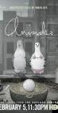

Animals.
Stephen Klancher
...has seen 1
...has seen 0 hours
...has not seen 0.5 hours

Timeline
Most Recent:
Episode One: Rats.
First Unseen:
Episode Two: Pigeons. (# 2)
...has seen 1
...has seen 0 hours
...has not seen 0.5 hours
Timeline
Most Recent:
Episode One: Rats.
First Unseen:
Episode Two: Pigeons. (# 2)


Episode Twenty-Six: At A Loss For Words When We Needed Them Most Or The Rise and Fall of GrabBagVille. Airs on 2018-09-07
S3 - E6 of Animals.
S3 - E6 of Animals.
Episode Twenty-Eight: The Democratic People's Republic of Kitty City. Airs on 2018-09-21
S3 - E8 of Animals.
S3 - E8 of Animals.